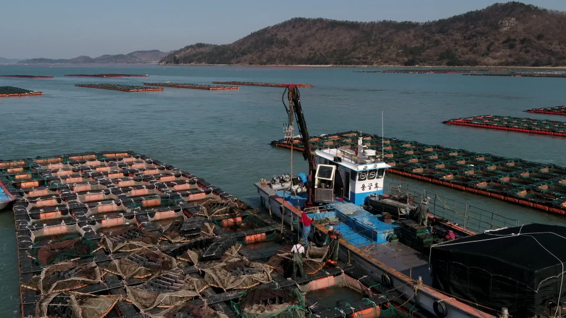
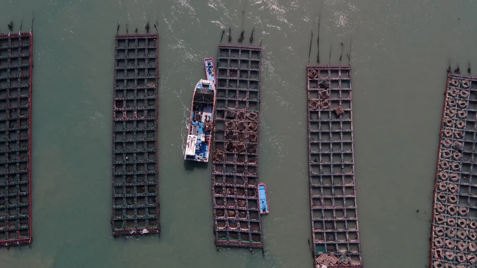

전라남도 진도 · 수산식품 전문기업
진도에서 전복과 미역을 직접 양식하고, 가공부터 유통과 수출까지 이어갑니다.
생산·품질
전복 양식과 종자생산부터 미역·다시마 양식, 수산 간편식과 기업용 식자재 제조까지 직접 이어갑니다.

제품소개
전복을 담아 한 끼로 즐기는 죽
전복과 미역을 함께 담은 국
장어를 넣어 끓인 탕
식자재 공급용 1kg 냉동 전복
해외수출
일본 활전복 직접 수출과 미국 H Mart 간접 수출을 통해 해외 공급 경험을 쌓았습니다.

식자재, OEM 제조, 국내 유통 및 해외수출 문의 내용을 작성할 수 있습니다.